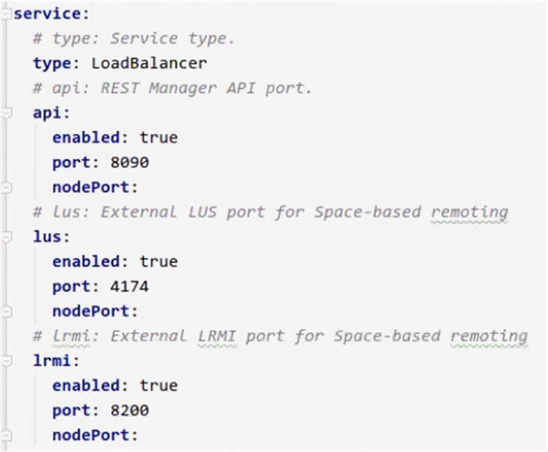

The
helm inspect insightedge-pu
helm show all insightedge-puhelm inspect insightedge-puThe values.yaml file is printed in the command window, and each configurable value has a short explanation above it. The indentation in this printout indicates a use of a ".' (dot) in the value name. For example, the high availability property for the Platform Manager is listed as follows in the file:
manager:
ha: falsemanager.ha=trueYou can create additional values.yaml files with customized values.
The following Helm command shows how a custom YAML file can be used to override the values in the original GigaSpaces Helm chart:
helm install insightedge -f customValues.yaml --name hellohelm install hello insightedge -f customValues.yaml helm install insightedge -f customValues.yaml --name helloKubernetes uses services to externalize functionality in clusters to the "outside world". Kubernetes services define a logical set of Pods that support the services themselves, and a policy by which to access them. This policy is defined using the service type.
LoadBalancer - External load balancer that is dedicated to a specific service, and functions as a gateway to the pods that support the service.
NodePort - Provides access to the service directly via the node on which the supporting pods are deployed.
The manager and pu (service) sections. The manager section is relevant for all pu section only needs attention if you require Space-based remoting.
The manager and pu services are configured as follows:
loadBalancer. NodePort field is empty by default, meaning that for each process (api, lrmi, and lus), Kubernetes assigns a random value to the node port in the range of 30000-32767. 
You can set the NodePort value manually if necessary.
To view the full service configuration, including ports, run the following command:
kubectl describe svc <service name> It is strongly recommended to leave the default port values. For more information about service types and when it may be advisable to modify the values, see